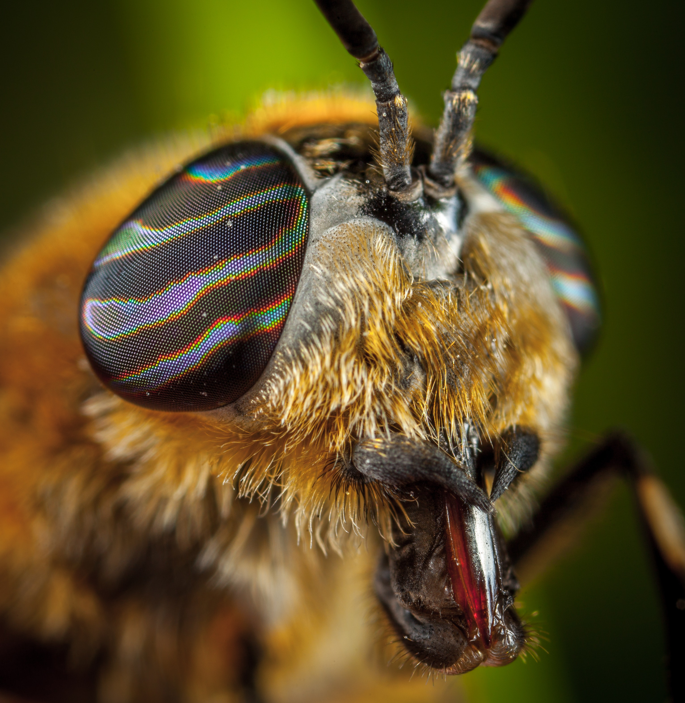
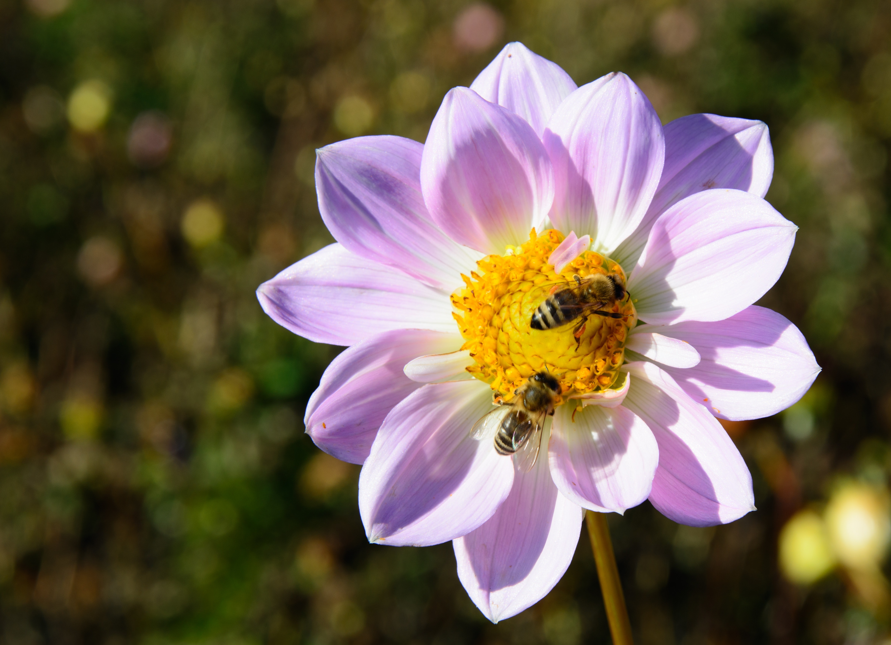

Za jednu kašiku meda 12 pčela treba da rade ceo svoj život.
Pri letu krilo pčele napravi preko 200 zamaha u sekundi, odnosno preko 12 ooo zamaha u minutu.
Da li ste znali?

U vreme najveće nosivosti, matica može dnevno položiti i preko 1400 jaja, čija težina premašuje težinu same matice.
Pčele radilice u letnjem periodu žive oko 40 dana. Od toga 20 dana obavljaju kućne poslove (u košnici), a 20 dana izleću van nje. Zimi pčele radilice žive i do 6 meseci. Matica može živeti 5 godina, pa i više.
Da li ste znali?

Neka istraživanja su potvrdila da pčele odgajene na šećeru žive 10-15 dana kraće od pčela odgajenih na medu. Pored meda, veliki uticaj na dužinu života pčela ima i polen. U eksperimentalnim uslovima, pčele hranjene samo medom su živele 20-25 dana, dok one hranjene medom i polenom su živele 40-50 dana, čak dva puta duže.
Pčele svojim oprašivanjem uvećavaju prinose jabuka za 30%, jagoda 35%, višanja 40%, šljiva 42%, malina 45%.